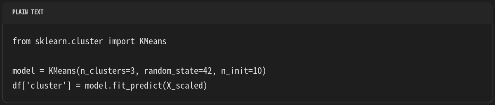
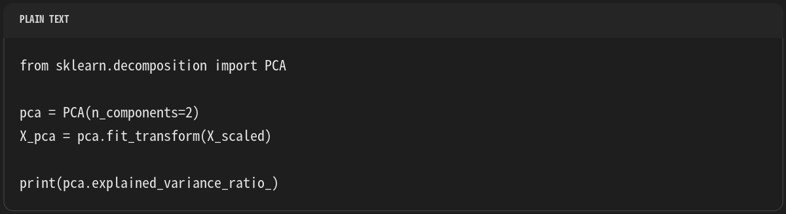
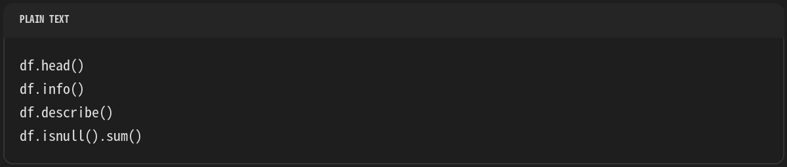
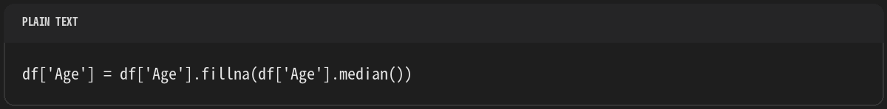
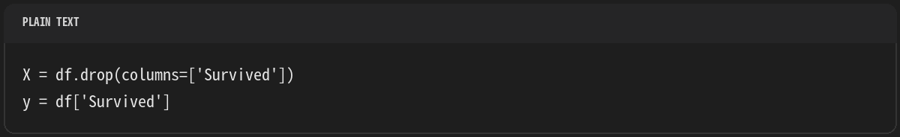
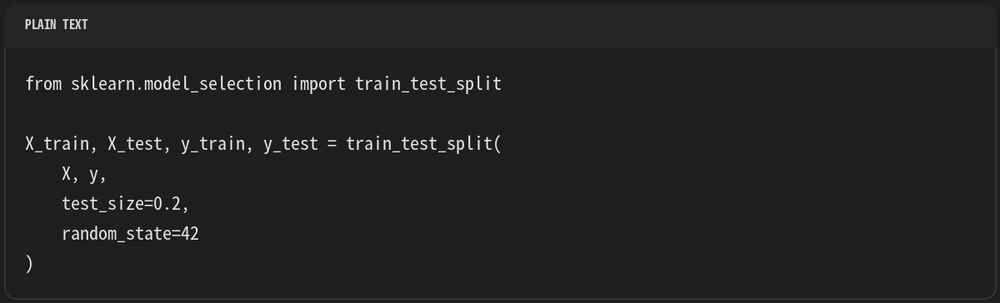
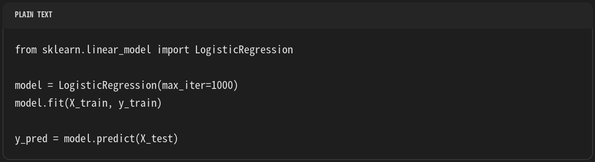
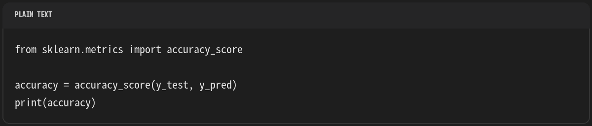

📚 3주차 Python Machine Learning
📅 2026.10.26 (Mon) ~ 2026.10.30 (Fri) | Total : 5 days
📕 E. Unsupervised Learning (2026.10.30 Fri)
📃 a. Unsupervised Learning (비지도 학습)
정답이 없는 데이터에서 패턴이나 특징을 찾아내는 머신러닝
| 구분 | 지도 학습 | 비지도 학습 |
|---|---|---|
| 정답 데이터 | 있음 | 없음 |
| 목적 | 예측 | 패턴 발견 |
| 예시 | 생존 여부 예측 | 고객 그룹화 |
- Clustering (군집화) : 비슷한 데이터끼리 그룹화
- Dimensionality Reduction (차원 축소) : 데이터의 특성 수를 줄임
📃 b. Clustering (군집화)
비슷한 특성을 가진 데이터끼리 그룹으로 묶는 방법
대표 알고리즘:
| 알고리즘 | 특징 |
|---|---|
| K-Means | 지정한 K개의 그룹으로 분류 |
| DBSCAN | 데이터의 밀도를 기준으로 그룹화, 이상치 탐지 가능 |
K-Means 핵심 코드

PLAIN TEXT 코드
n_clusters=3: 3개의 군집 생성fit_predict(): 학습 후 각 데이터의 군집 번호 반환X_scaled: 스케일링한 입력 데이터
💡 주의: K-Means처럼 거리를 사용하는 알고리즘은 StandardScaler 등을 이용한 데이터 스케일링이 중요하다.
📃 c. Dimensionality Reduction (차원 축소)
데이터의 특성 수를 줄여 데이터 분석과 시각화를 쉽게 만드는 방법
대표 알고리즘: PCA (Principal Component Analysis, 주성분 분석)
- 여러 특성을 소수의 새로운 특성으로 압축한다.
- 데이터 시각화와 데이터 복잡도 감소에 활용한다.
- 차원을 줄이는 과정에서 일부 정보가 손실될 수 있다.
PCA 핵심 코드

PLAIN TEXT 코드
n_components=2: 2개의 주성분으로 축소fit_transform(): 학습 후 데이터를 변환explained_variance_ratio_: 각 주성분이 설명하는 분산의 비율
💡 쉽게 기억하기
- Clustering = 비슷한 데이터끼리 묶기
- PCA = 여러 특성을 적은 수의 특성으로 압축하기
📃 d. Project (프로젝트)
비지도 학습 프로젝트 기본 순서
- 데이터 수집 및 탐색
- 결측치 및 이상치 확인
- 데이터 전처리
- 필요에 따라 스케일링
- 알고리즘 적용 (K-Means, DBSCAN, PCA)
- 결과 평가 및 시각화
주요 평가 지표
Silhouette Score: 군집이 얼마나 잘 분리되어 있는지 평가Explained Variance Ratio: PCA의 주성분이 설명하는 분산의 비율
📕 F. Project (2026.10.30 Fri)
📃 a. 실습 (타이타닉 생존자)
승객 정보를 이용해 생존 여부를 예측하는 머신러닝 프로젝트
- 학습 유형: 지도 학습 (Supervised Learning)
- 문제 유형: 분류 (Classification)
- 타깃 변수:
Survived0: 사망1: 생존
1. 데이터 확인

PLAIN TEXT 코드
head(): 데이터 확인info(): 컬럼과 데이터 타입 확인describe(): 기초 통계 확인isnull().sum(): 컬럼별 결측치 개수 확인
2. 결측치 처리

PLAIN TEXT 코드
fillna(): 결측치 대체median(): 중앙값 계산
3. 독립변수와 종속변수 분리

PLAIN TEXT 코드
X: 예측에 사용할 특성(독립변수)y: 예측할 정답(종속변수)
4. 학습 데이터와 테스트 데이터 분리

PLAIN TEXT 코드
test_size=0.2: 전체 데이터의 20%를 테스트용으로 사용random_state=42: 데이터 분할 결과의 재현성 확보
5. 모델 학습 및 예측

PLAIN TEXT 코드
fit(): 모델 학습predict(): 새로운 데이터의 정답 예측
※ 모델 학습 전에는 결측치 처리와 범주형 변수 인코딩 등 필요한 전처리를 완료해야 한다.
6. 모델 평가

PLAIN TEXT 코드
Accuracy: 전체 예측 중 정답을 맞힌 비율- 추가 지표:
Precision,Recall,F1-score
📝 핵심 복습
| 개념 | 핵심 내용 |
|---|---|
| 지도 학습 | 정답이 있는 데이터로 예측 |
| 비지도 학습 | 정답 없이 데이터의 패턴 발견 |
| Clustering | 비슷한 데이터끼리 그룹화 |
| K-Means | K개의 군집 생성 |
| DBSCAN | 밀도 기반 군집화 |
| PCA | 데이터의 차원 축소 |
X | 입력 특성 |
y | 예측할 정답 |
fit() | 모델 학습 |
predict() | 예측 |
Accuracy | 예측 정확도 |
🎯 이번 주 핵심: 비지도 학습의 군집화와 차원 축소를 이해하고, 타이타닉 데이터를 이용해 머신러닝의 기본 흐름인 전처리 → 데이터 분리 → 모델 학습 → 예측 → 평가 를 익힌다.